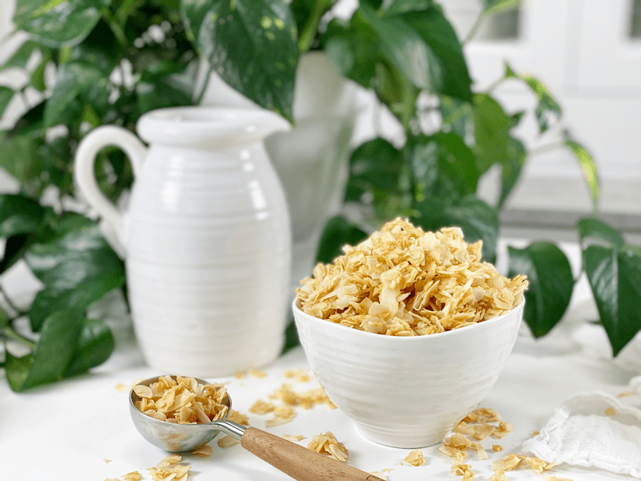

Coconut Bacon Bits | Vegan | Oil-Free
Coconut “Bacon” Bits
I am always looking to add a crunch to my salads and these little morsels not only add that crunch but they taste heavenly as well! I will admit that they don’t taste 100% like bacon bits but pretty darn close and that alone is enough to tickle my taste buds. I must warn you — as they are drying out in the dehydrator, it will fill your house with the smell of bacon, thanks to the liquid smoke. They are highly addictive and just might become a pantry staple in your household too.

Questioning the use of liquid smoke?
Liquid smoke is what gives the coconut that rustic, bacon / BBQ flavor. Have you ever wondered how liquid smoke is made? I have, and I took the time to research it. To make it, hickory and a little mesquite are burned at a low temperature; then, the smoke is captured and diverted into a tunnel.
In the tunnel, a constant stream of distilled water is channeled through the smoke to pick up the flavor. The liquid is then filtered to remove any sediment or oil before bottling. There are no other additional ingredients! It is literally nothing but smoke-infused water, with no additives of any kind.
Large Coconut Flakes
For this recipe, it is best to use as large of dried coconut flakes as you can find. But, if you only have shredded coconut, that will work too, just a different mouthfeel. Also, you want to make sure that they unsweetened since most sweetened coconut is over the top in sugar. I hope you enjoy this simple yet delicious recipe. I created and posted this recipe on the site back on 2/01/2011 and have yet to feel the need to deviate from the original recipe. Please be sure to leave a comment below. blessings, amie sue
 Ingredients:
Ingredients:
- 3 cups dried large flake, unsweetened coconut
- 1 Tbsp liquid smoke
- 2 Tbsp Coconut Aminos
- 1 Tbsp water
- 1 Tbsp maple syrup
Preparation:
- In a medium-sized bowl, whisk the liquid smoke, coconut aminos, water, and maple syrup together.
- Add the coconut, and with your hands, mix everything until the coconut is well coated.
- Spread the mixture on the non-stick sheet that comes with your dehydrator and dehydrate at 115 degrees (F) for 4-6 hours or until crispy.
- Store in a glass sealed container for roughly a week, possibly longer.
- Enjoy these coconut bacon bits as a snack, sprinkled over a salad, or a bowl of tomato soup! Add it anywhere that you would enjoy a little crunch, sweet and saltiness.
© AmieSue.com